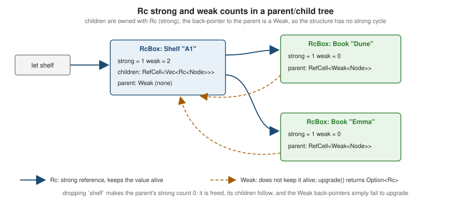

Smart Pointers
|
This content was generated with the assistance of AI and should be verified against the official documentation before being relied on in production. |
This page is written against Rust 1.99.0 and the 2024 edition, checked on 2026-10-06. A smart pointer is a type that
acts like a reference (it implements Deref) but also owns or manages what it points to and does something when it
is dropped (it implements Drop). String and Vec<T> are smart pointers in this sense. This page covers the
general-purpose ones in std: Box, Rc/Weak, Arc and Cow. The interior-mutability types Cell, RefCell,
Mutex and friends, which are often combined with them, are on
Interior Mutability & Lazy
Initialization.
Box<T>: a value on the heap
Box<T> allocates a T on the heap and owns it; the Box itself is one pointer wide (two for unsized T). When the
box is dropped, the value is dropped and the memory freed. It has no other overhead. Use it:
-
for recursive types, whose size would otherwise be infinite;
-
for trait objects (
Box<dyn Trait>) and other unsized values (Box<str>,Box<[T]>); -
to move a large value cheaply (only the pointer moves) or to keep a large value off the stack.
#[derive(Debug)]
enum Category {
Leaf(String),
Node(String, Vec<Category>), // Vec already boxes its elements
}
#[derive(Debug)]
enum Expr {
Count,
Literal(u32),
Add(Box<Expr>, Box<Expr>), // without Box this would be E0072: recursive type has infinite size
}
fn eval(e: &Expr, count: u32) -> u32 {
match e {
Expr::Count => count,
Expr::Literal(n) => *n,
Expr::Add(a, b) => eval(a, count) + eval(b, count),
}
}
fn main() {
let fee = Expr::Add(Box::new(Expr::Count), Box::new(Expr::Literal(2)));
println!("{}", eval(&fee, 5)); // 7
let tree = Category::Node("Fiction".into(), vec![Category::Leaf("Sci-fi".into())]);
println!("{tree:?}");
let big: Box<[u8; 1_000_000]> = vec![0u8; 1_000_000].into_boxed_slice().try_into().unwrap(); // never on the stack
println!("{} {}", big.len(), size_of::<Box<[u8; 1_000_000]>>()); // 1000000 8
}A recursive type without indirection is error E0072; the compiler
suggests inserting a Box. Note that Box::new([0u8; 1_000_000]) builds the array on the stack first (which may
overflow the stack in debug builds); vec![..].into_boxed_slice() or Box::new_zeroed() (1.92, which returns
Box<MaybeUninit<T>>) avoid that.
Deref and Drop
Two traits make a type a smart pointer:
-
Deref(andDerefMut) lets*breach the inner value and enables deref coercion and auto-deref, so&Box<String>works where&stris expected andb.len()callsString::len. See Type Conversions & Coercions. -
Dropruns cleanup code when the pointer goes out of scope — forBox, dropping the value and freeing the allocation; forRc, decrementing the count. See Drop, RAII & Drop Check.
A smart pointer of your own
Implementing both traits turns any wrapper into a smart pointer. In shelf, a Loan guard dereferences to the lent
Book and, when dropped, records the return — so a book cannot be forgotten on an early return or ?:
use std::cell::RefCell;
use std::ops::Deref;
#[derive(Debug)]
struct Book {
title: String,
}
/// Lends a book for the guard's lifetime; dropping the guard returns it.
struct Loan<'a> {
book: &'a Book,
member: String,
returns: &'a RefCell<Vec<String>>,
}
impl Deref for Loan<'_> {
type Target = Book;
fn deref(&self) -> &Book {
self.book
}
}
impl Drop for Loan<'_> {
fn drop(&mut self) {
self.returns.borrow_mut().push(format!("{} returned {}", self.member, self.book.title));
}
}
fn read_first_chapter(loan: &Loan<'_>) -> usize {
loan.title.len() // auto-deref: Loan -> Book, then the field
}
fn main() {
let dune = Book { title: "Dune".into() };
let returns = RefCell::new(Vec::new());
{
let loan = Loan { book: &dune, member: "ana".into(), returns: &returns };
println!("{} read {} chars of {:?}", loan.member, read_first_chapter(&loan), *loan);
} // Drop runs here
println!("{:?}", returns.borrow()); // ["ana returned Dune"]
}Source: The Book: Defining Our Own Smart Pointer and The Book: Running Code on Cleanup with the Drop Trait
Implement Deref only for types that really are pointers to their target. Using it to emulate inheritance (a
Member that derefs to Person) is a well-known anti-pattern: methods appear on the wrapper by accident and trait
implementations do not follow.
Rc<T>: shared ownership in one thread
Sometimes a value genuinely has several owners — a book that belongs to several reading lists, a node referenced by
several edges — and it should live until the last owner is done. Rc<T> (reference counted) provides that. Each
Rc::clone increments a strong count and returns another pointer to the same allocation; each drop decrements it;
the value is dropped when the count reaches zero.
use std::rc::Rc;
#[derive(Debug)]
struct Book {
title: String,
}
fn main() {
let dune = Rc::new(Book { title: "Dune".into() });
let favourites = [Rc::clone(&dune)]; // count 2 -- clones the pointer, not the Book
{
let club_list = [Rc::clone(&dune)]; // count 3
println!("count = {}", Rc::strong_count(&dune));
drop(club_list);
}
println!("count = {}", Rc::strong_count(&dune)); // 2
println!("{} {}", favourites[0].title, Rc::ptr_eq(&dune, &favourites[0])); // Dune true
}Rc gives shared access, so it only hands out &T; to mutate shared data, combine it with interior mutability
(Rc<RefCell<T>>). Rc is neither Send nor Sync — its counter is not atomic — so the compiler refuses to send it
to another thread (E0277, "`Rc<...>` cannot be sent between threads safely"); use Arc there. Prefer writing
Rc::clone(&x) rather than x.clone() to make clear that only a pointer is copied.
Rc<RefCell<T>>: shared and mutable
Rc alone gives only shared references. To let several owners mutate the shared value, put a RefCell inside: the
borrow rules are then checked at run time, per access. In shelf, several members can share one reading list:
use std::cell::RefCell;
use std::rc::Rc;
#[derive(Debug)]
struct Member {
name: String,
reading_list: Rc<RefCell<Vec<String>>>,
}
fn main() {
let book_club = Rc::new(RefCell::new(vec!["Dune".to_string()]));
let ana = Member { name: "ana".into(), reading_list: Rc::clone(&book_club) };
let ben = Member { name: "ben".into(), reading_list: Rc::clone(&book_club) };
ana.reading_list.borrow_mut().push("Emma".into()); // a short-lived &mut, checked at run time
ben.reading_list.borrow_mut().push("Kindred".into());
println!("{} and {} share {:?}", ana.name, ben.name, book_club.borrow()); // ["Dune", "Emma", "Kindred"]
let reading = book_club.borrow(); // a shared borrow is alive...
match ben.reading_list.try_borrow_mut() {
Ok(_) => unreachable!(),
Err(e) => println!("cannot edit while someone reads: {e}"), // ...so a mutable one is refused
}
drop(reading);
println!("owners: {}", Rc::strong_count(&book_club)); // 3
}borrow_mut() while another borrow is alive panics ("RefCell already borrowed"); try_borrow_mut() returns a
BorrowMutError instead. Keep borrows short — never hold a Ref or RefMut across a call that might borrow the same
cell again. The details are on Interior
Mutability & Lazy Initialization.
Weak<T> and reference cycles
Reference counting cannot free a cycle: if A holds an Rc to B and B holds an Rc to A, neither count ever reaches
zero and both leak. Weak<T> is a non-owning pointer to an Rc allocation: it does not keep the value alive, and
weak.upgrade() returns Option<Rc<T>> — None if the value has been dropped. The standard pattern for trees and
graphs is: owners point down with Rc, back-references point up with Weak.

use std::cell::RefCell;
use std::rc::{Rc, Weak};
#[derive(Debug)]
struct Node {
name: String,
parent: RefCell<Weak<Node>>,
children: RefCell<Vec<Rc<Node>>>,
}
impl Node {
fn new(name: &str) -> Rc<Node> {
Rc::new(Node { name: name.into(), parent: RefCell::new(Weak::new()), children: RefCell::new(vec![]) })
}
fn add_child(parent: &Rc<Node>, child: Rc<Node>) {
*child.parent.borrow_mut() = Rc::downgrade(parent); // weak back-pointer
parent.children.borrow_mut().push(child); // strong pointer down
}
}
fn main() {
let shelf = Node::new("A1");
let dune = Node::new("Dune");
Node::add_child(&shelf, Rc::clone(&dune));
Node::add_child(&shelf, Node::new("Emma"));
let parent_name = dune.parent.borrow().upgrade().map(|p| p.name.clone());
println!("{parent_name:?}"); // Some("A1")
println!("strong={} weak={}", Rc::strong_count(&shelf), Rc::weak_count(&shelf)); // strong=1 weak=2
drop(shelf); // parent freed: no cycle
println!("{:?}", dune.parent.borrow().upgrade().map(|p| p.name.clone())); // None
}Rc::new_cyclic (1.60) builds a value that holds a Weak to itself in one step, which is useful for objects that
must hand out references to themselves — here, a shelf whose slots point back at the shelf:
use std::rc::{Rc, Weak};
struct Shelf {
code: String,
slots: Vec<Slot>,
}
struct Slot {
position: usize,
shelf: Weak<Shelf>, // back-pointer, so no cycle
}
impl Slot {
fn label(&self) -> String {
let shelf = self.shelf.upgrade().expect("shelf dropped");
format!("{}-{}", shelf.code, self.position)
}
}
fn main() {
let shelf = Rc::new_cyclic(|me: &Weak<Shelf>| Shelf {
code: "A1".into(),
slots: (1..=3).map(|position| Slot { position, shelf: me.clone() }).collect(),
});
let labels: Vec<_> = shelf.slots.iter().map(Slot::label).collect();
println!("{labels:?} strong={} weak={}", Rc::strong_count(&shelf), Rc::weak_count(&shelf)); // [..] strong=1 weak=3
}Source: std: Rc::new_cyclic
Inside the closure the Weak cannot be upgraded yet (the value is still being built), but it can be cloned and stored.
Arc<T>: shared ownership across threads
Arc<T> (atomically reference counted) is the thread-safe Rc: the counts are updated with atomic instructions, so
clones and drops can happen on different threads. Arc<T> is Send and Sync when T is Send + Sync. It is the
standard way to share read-only data — configuration, a connection pool, a catalogue — between threads and async
tasks, and with Mutex/RwLock (Arc<Mutex<T>>) to share mutable data.
use std::sync::Arc;
use std::thread;
fn main() {
let catalogue: Arc<Vec<String>> = Arc::new(vec!["Dune".into(), "Emma".into(), "Kindred".into()]);
let handles: Vec<_> = (0..3)
.map(|i| {
let catalogue = Arc::clone(&catalogue); // one clone per thread
thread::spawn(move || format!("thread {i} sees {}", catalogue[i]))
})
.collect();
for h in handles {
println!("{}", h.join().unwrap());
}
println!("count back to {}", Arc::strong_count(&catalogue)); // 1
}Source: Rust by Example: Arc
Atomic increments are more expensive than plain ones, especially when many cores clone and drop the same Arc
(cache-line contention), so use Rc in single-threaded code and avoid cloning an Arc per item in hot loops — pass
&T or &Arc<T> instead. In services, Arc cycles leak exactly like Rc cycles: a registry that holds Arcs to
connections which hold Arcs back to the registry never frees either. Gangappa & Rangaraj (Mastering Distributed
Observability in Rust, chapter 2) describe how such leaks show up as steadily growing memory in long-running
processes; the fix is the same Weak back-pointer (std::sync::Weak).
Arc<str> and Arc<[T]> for shared immutable data
Arc<String> is a pointer to a heap block that holds a String, which is itself a pointer to the text: two allocations
and two indirections. Arc<str> (and Rc<str>, Arc<[T]>) stores the text directly in the reference-counted block,
with a fat pointer (address and length). It is the usual choice for strings that are created once and then shared
widely, such as titles or author names in an index:
use std::collections::HashMap;
use std::sync::Arc;
fn main() {
let author: Arc<str> = Arc::from("Octavia E. Butler"); // one allocation, text inline
let mut by_author: HashMap<Arc<str>, Vec<&str>> = HashMap::new();
for title in ["Kindred", "Dawn", "Parable of the Sower"] {
by_author.entry(Arc::clone(&author)).or_default().push(title); // cloning bumps a counter
}
println!("{:?} refs={}", by_author[&*author], Arc::strong_count(&author)); // [...] refs=2
println!("{} vs {} bytes", size_of::<Arc<str>>(), size_of::<Arc<String>>()); // 16 vs 8: fat vs thin pointer
}Source: std::sync::Arc and std::rc
Cow: clone on write
std::borrow::Cow<'a, B> is either Borrowed(&'a B) or Owned(B::Owned). It defers cloning until a modification is
actually needed, which avoids allocations on the common path:
use std::borrow::Cow;
fn with_default_extension(name: &str) -> Cow<'_, str> {
if name.contains('.') { Cow::Borrowed(name) } else { Cow::Owned(format!("{name}.json")) }
}
fn main() {
println!("{} {}", with_default_extension("books.csv"), with_default_extension("books"));
let mut text: Cow<str> = Cow::Borrowed("dune");
text.to_mut().make_ascii_uppercase(); // first mutation clones into an owned String
println!("{text} owned={}", matches!(text, Cow::Owned(_)));
}Source: std::borrow::Cow
make_mut, into_raw and from_raw
-
Rc::make_mut(&mut rc)/Arc::make_mutgive&mut T: if this is the only strong pointer, it mutates in place; otherwise it clones the value first (clone-on-write for shared data).Rc::get_mutreturnsSome(&mut T)only when the pointer is unique. -
Rc::try_unwrap/Arc::into_inner(1.70) take the value out if this is the last strong pointer. -
Box::into_raw/Box::from_raw,Rc::into_raw/Rc::from_rawandArc::into_raw/from_rawconvert to and from raw pointers, typically to pass ownership through C code.from_rawisunsafe: the pointer must come from the matchinginto_raw. -
Box::new_zeroed,Rc::new_zeroedandArc::new_zeroed(1.92) allocate zeroed, uninitialised memory (MaybeUninit<T>).
use std::sync::Arc;
fn main() {
let mut shared = Arc::new(vec![1, 2, 3]);
let other = Arc::clone(&shared);
Arc::make_mut(&mut shared).push(4); // shared with `other`: clones, then mutates the copy
println!("{shared:?} {other:?}"); // [1, 2, 3, 4] [1, 2, 3]
drop(other);
Arc::make_mut(&mut shared).push(5); // unique now: mutates in place, no clone
println!("{:?}", Arc::into_inner(shared));
let raw = Box::into_raw(Box::new(String::from("handed to C")));
// SAFETY: `raw` came from Box::into_raw just above and has not been freed.
let back = unsafe { Box::from_raw(raw) };
println!("{back}");
}Source: std: Arc::make_mut
Pitfalls
-
Cycles of strong pointers leak. Parent/child links, observer lists and caches that point back at their owner must use
Weakin one direction.Rc::strong_countandRc::weak_countin a test catch regressions. -
RefCellpanics are run-time borrow errors. Aborrow_mut()while aRefis alive — often one hidden in a longer expression or kept by an iterator — panics. Keep borrows short, or usetry_borrow_mutwhere conflicts are possible. -
.clone()on anRclooks expensive and is not;.clone()on the contents is.Rc::clone(&x)documents that only the pointer is copied;(*x).clone()deep-copies the value. -
Comparing pointers versus values.
==on twoRc<T>compares the values (T: PartialEq);Rc::ptr_eqasks whether they are the same allocation. -
Large values through
Box::new. The argument is built on the stack first; for big arrays usevec![..]andinto_boxed_slice, orBox::new_zeroed/Box::new_uninit. -
Arcin hot paths. Every clone and drop is an atomic read-modify-write on a shared cache line. Clone once per thread or task, and pass&Tinside. -
Box<dyn Trait>is'staticby default.Box<dyn Catalog>meansBox<dyn Catalog + 'static>; to box a trait object that borrows, write the lifetime:Box<dyn Catalog + 'a>. -
Derefis not inheritance. Implement it for pointer-like types only.
Common errors
| Error | Cause and fix |
|---|---|
E0072 recursive type has infinite size |
a type contains itself by
value; add indirection ( |
E0596 cannot borrow data in an |
|
E0507 cannot move out of an |
other owners may still use the
value; use |
E0599 no method named |
|
E0609 no field |
a |
E0277 |
use |
E0382 borrow of moved value (a |
a |
RefCell already borrowed (a panic, not a compile error) |
|
The two errors that surprise newcomers most come from treating an Rc as if it owned its value exclusively. Mutating
through it is E0596:
use std::rc::Rc;
fn main() {
let shelf = Rc::new(vec![String::from("Dune")]);
shelf.push(String::from("Emma")); // error[E0596]: cannot borrow data in an `Rc` as mutable
println!("{shelf:?}");
}and moving the value out is E0507:
use std::rc::Rc;
struct Book {
title: String,
}
fn main() {
let shared = Rc::new(Book { title: "Dune".into() });
let owned: Book = *shared; // error[E0507]: cannot move out of an `Rc`
println!("{}", owned.title);
}Source: Error E0507 and std: Rc::try_unwrap
When the value is needed by ownership, the Rc API offers three ways out, depending on what should happen if other
owners exist:
use std::rc::Rc;
#[derive(Debug, Clone, PartialEq)]
struct Book {
title: String,
}
fn main() {
let only = Rc::new(Book { title: "Dune".into() });
let book: Book = Rc::try_unwrap(only).expect("no other owners"); // Ok: the last strong pointer
println!("{book:?}");
let a = Rc::new(Book { title: "Emma".into() });
let b = Rc::clone(&a);
let a = Rc::try_unwrap(a).unwrap_err(); // Err gives the Rc back: `b` still shares it
let copy: Book = Rc::unwrap_or_clone(a); // clones because `b` is alive (1.76)
println!("{copy:?} {}", Rc::strong_count(&b)); // Book { title: "Emma" } 1
println!("{:?}", Rc::into_inner(b)); // Some(..): the last owner takes it (1.70)
}Source: std: Rc::unwrap_or_clone
A recursive type without indirection does not compile at all (E0072):
enum Expr {
Literal(u32),
Add(Expr, Expr), // error[E0072]: recursive type `Expr` has infinite size
}
fn main() {}Version notes
-
Rc::new_cyclicandArc::new_cyclicwere stabilised in 1.60;Rc::into_inner/Arc::into_innerin 1.70;Rc::unwrap_or_clone/Arc::unwrap_or_clonein 1.76. -
Box::new_uninit,Rc::new_uninitandArc::new_uninit(returningMaybeUninit<T>contents) arrived in 1.82, and thenew_zeroedvariants in 1.92. -
Trait upcasting (1.86) lets
Box<dyn Sub>coerce toBox<dyn Super>; see Trait Objects & dyn Compatibility. -
Custom allocators for
Box,RcandArc(Box::new_in) andBoxwith a?Sizedallocator API remain unstable (nightly-only) on Rust 1.99.
Choosing a smart pointer
| Type | Ownership | Thread-safe | Mutation |
|---|---|---|---|
|
single owner, heap |
if |
through |
|
shared, counted |
no |
with |
|
shared, atomically counted |
yes |
with |
|
non-owning, breaks cycles |
as |
via |
|
borrowed or owned |
if |
|
Compared with C++
Box<T> corresponds to std::unique_ptr<T>, Arc<T> to std::shared_ptr<T> (whose counts are always atomic), and
Weak<T> to std::weak_ptr<T>; Rc<T> has no direct C++ equivalent because C++ offers no non-atomic shared pointer.
The difference is in enforcement: Rust’s compiler rejects sharing an Rc across threads, using a Box after moving it,
or mutating through a shared pointer without interior mutability. See
C++: Memory Management & Smart Pointers.
Where the books are outdated
Yoon (Beginning Axum, chapter 1) says Rust catches memory leaks at compile time; reference cycles of Rc or Arc
leak in safe Rust, as shown above. Gangappa & Rangaraj (chapter 2) correctly describe Arc cycles as leaks in services.
Arc::into_inner (1.70) and the new_zeroed constructors (1.92) postdate the older books' examples.
References
-
The Rust Programming Language: Smart Pointers (Box, Deref, Drop, Rc, RefCell, reference cycles)
-
std::rc (Rc, Weak)
-
E0072, E0596, E0507, E0599, E0609, E0277 and E0382 in the Rust Compiler Error Index
-
The Rust Programming Language: RefCell<T> and the Interior Mutability Pattern
-
Rust Design Patterns: Deref polymorphism (community)
-
Rust release notes (1.60, 1.70, 1.76, 1.82, 1.92)
-
Manjunath Gangappa and Rajkumar Rangaraj, Mastering Distributed Observability in Rust (Packt, 2026)